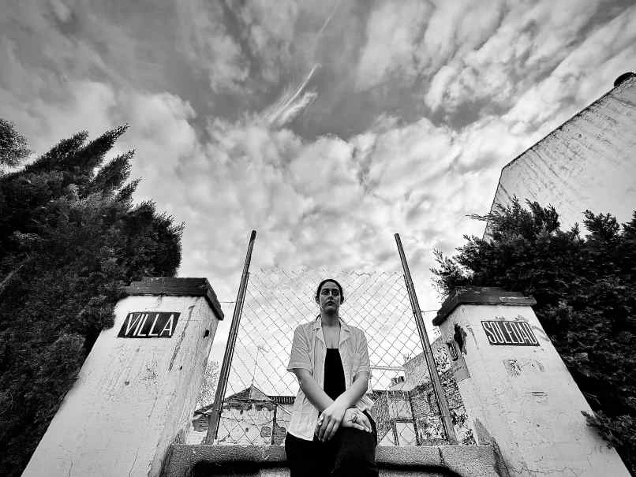
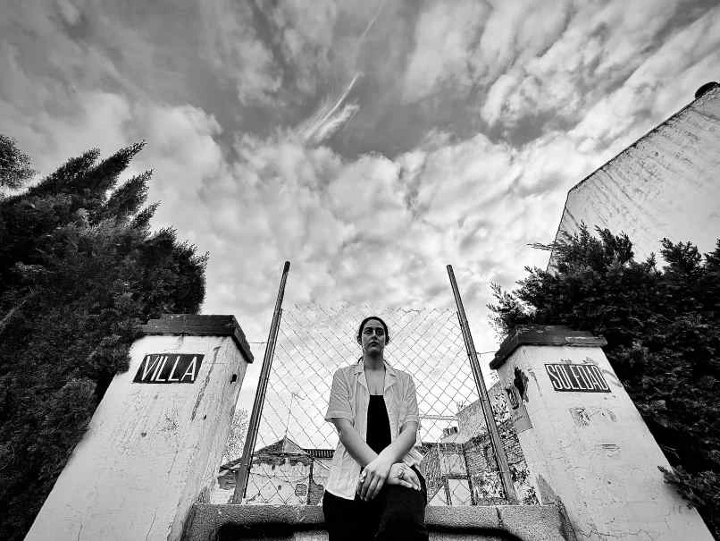
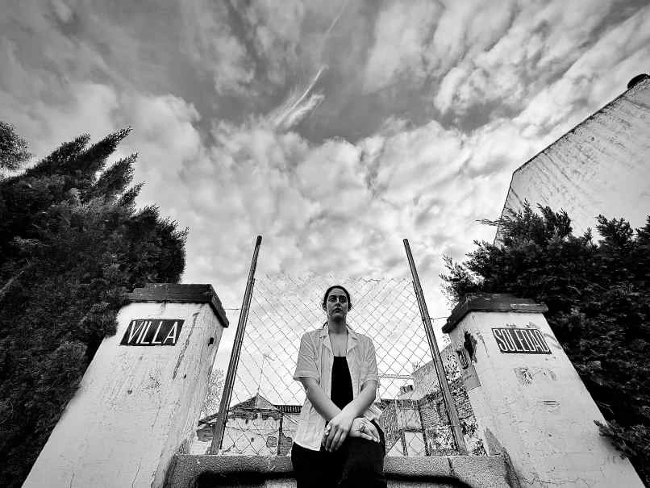

Galería

 



Un monólogo sobre Dora Maar
Escrito y dirigido por: Alba Berrocal
Fotografía: Reyes Cuesta
Malaga
¿Adorando qué? Amar
¿Quién? Dora Maar
Dora Maar... ¿La fotógrafa, la artista, la amante que llora, la pintora, la surrealista católica, la de izquierdas, la que se sienta a la derecha, la de negro o la que dió en el blanco? Todas, ninguna. La única.
"Dorita, la fotógrafa, insoportable cantaora... y qué fea"
¿En París?
Sí, y en tu ciudad, aquí y allí.
"Mi destino es pese a lo que parezca, magnífico. Antes decía que mi destino era, pese a lo que pareciera, muy duro." - Dora Maar
Este libro propone una mirada íntima y contemporánea sobre Dora Maar, más allá de su papel como musa de Picasso,
rescatando su voz como fotógrafa, pintora y creadora esencial del siglo XX. A través de fotografías
reinterpretadas, textos poéticos y un recorrido por las distintas etapas de su vida —del surrealismo a la crisis
interior y la madurez—, el proyecto dialoga entre pasado y presente, arte y memoria, para reivindicar a Dora
Maar y, con ella, a otras mujeres artistas cuya obra merece ser vista y reconocida desde nuevas perspectivas.
Comprar Libro en Amazon
